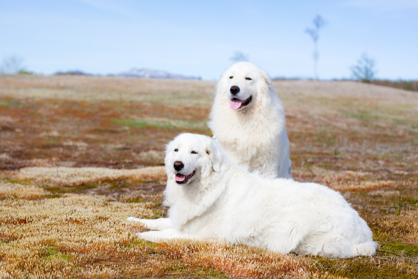
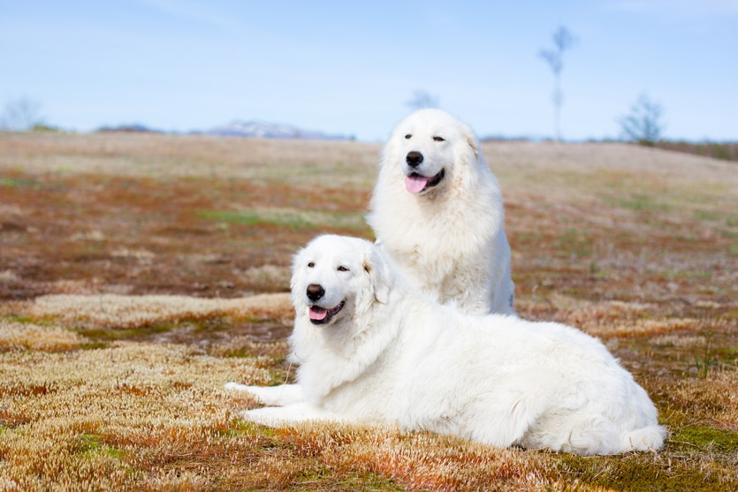
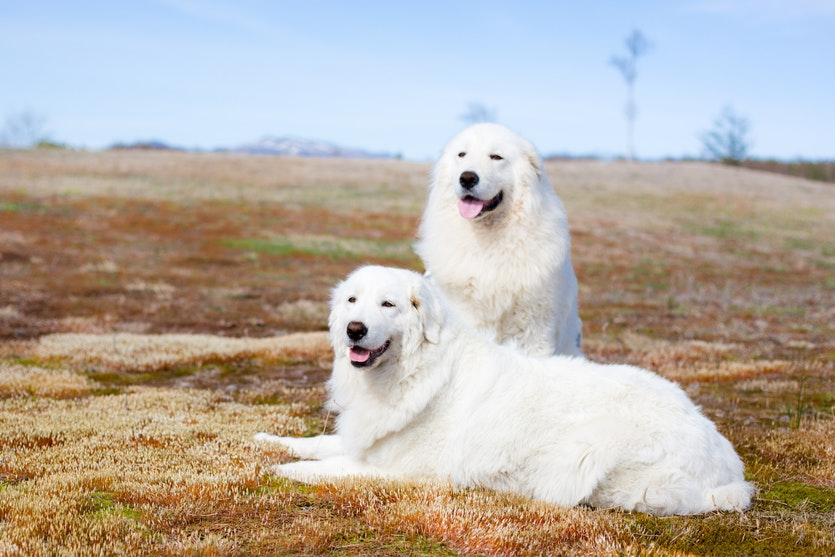

Dogs
By Emanuel Kaloutzis
The domestic dog (Canis lupus familiaris when considered a subspecies of the wolf or Canis familiaris when considered a distinct species) is a member of the genus Canis (canines), which forms part of the wolf-like canids, and is the most widely abundant terrestrial carnivore.The dog and the extant gray wolf are sister taxa as modern wolves are not closely related to the wolves that were first domesticated, which implies that the direct ancestor of the dog is extinct. The dog was the first species to be domesticated and has been selectively bred over millennia for various behaviors, sensory capabilities, and physical attributes. Their long association with humans has led dogs to be uniquely attuned to human behavior and they are able to thrive on a starch-rich diet that would be inadequate for other canid species. Dogs vary widely in shape, size and colors. They perform many roles for humans, such as hunting, herding, pulling loads, protection, assisting police and military, companionship and, more recently, aiding disabled people and therapeutic roles. This influence on human society has given them the sobriquet of "man's best friend".
